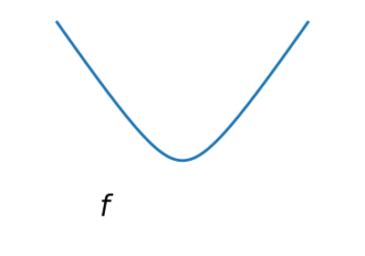
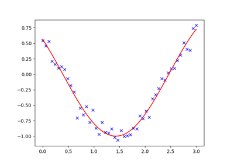
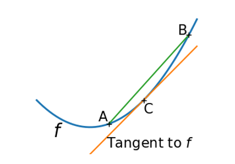
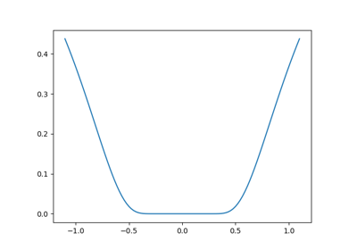
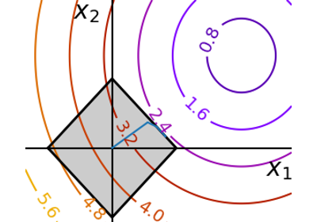
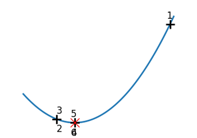
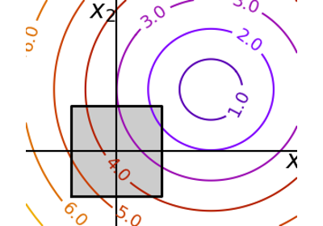
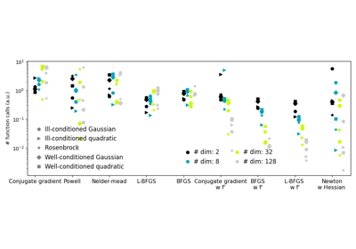
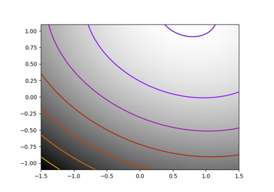
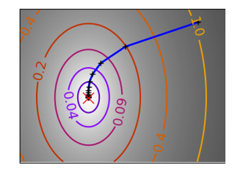

Examples for the mathematical optimization chapter¶


Smooth vs non-smooth

Curve fitting

Convex function

Finding a minimum in a flat neighborhood
Finding a minimum in a flat neighborhood

Optimization with constraints

Brent's method

Constraint optimization: visualizing the geometry
Constraint optimization: visualizing the geometry

Plotting the comparison of optimizers
Plotting the comparison of optimizers

Alternating optimization

Gradient descent